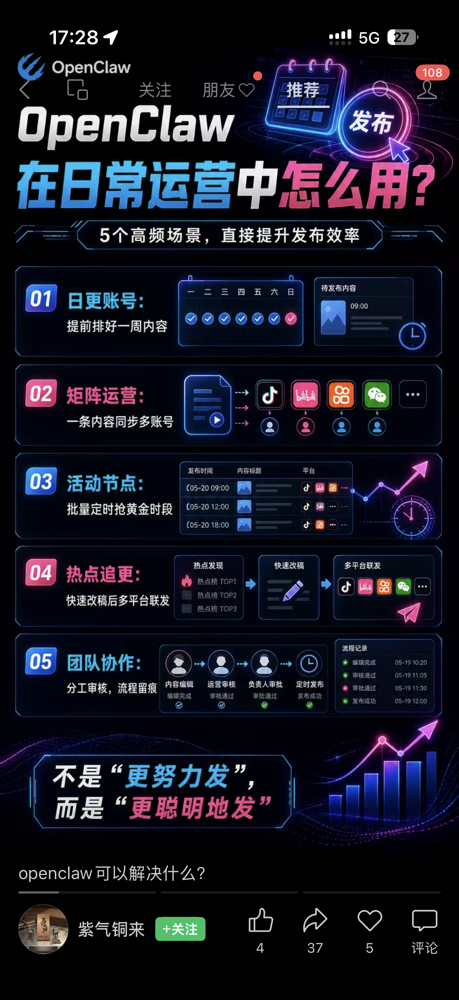
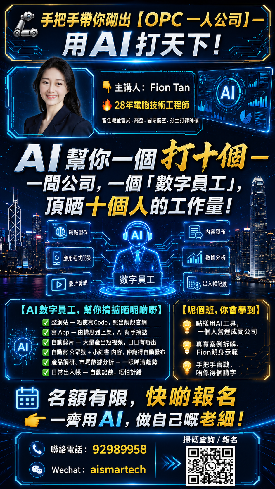
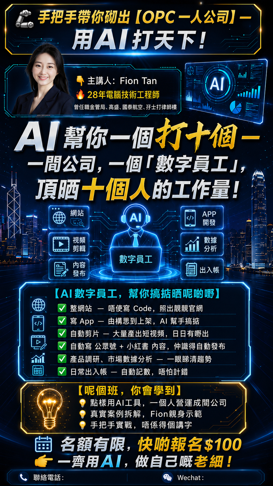
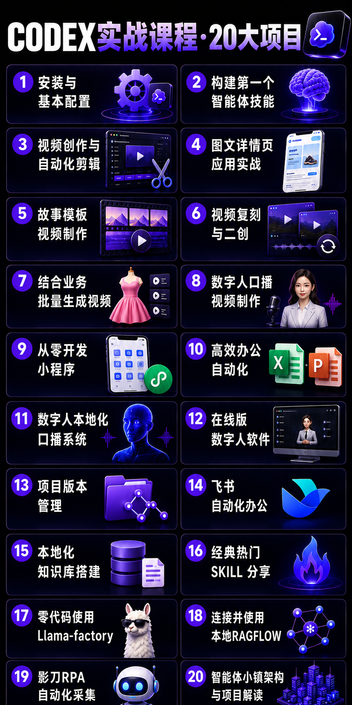
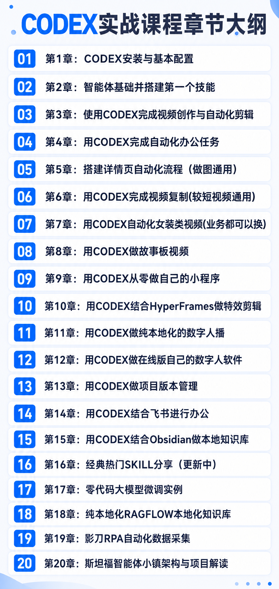
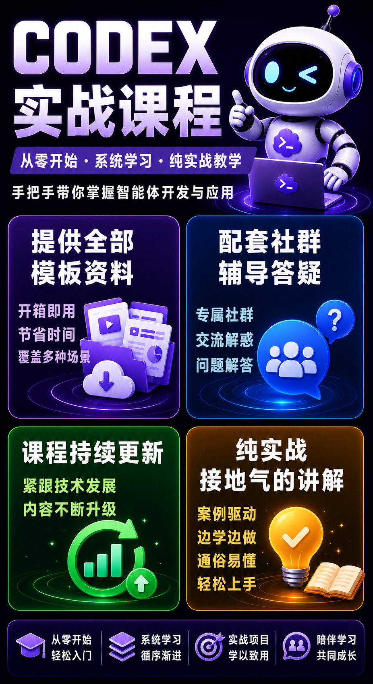

清晰的个人定位
找到你真正擅长、适合表达，也值得被看见的方向。
这是一套为老板、创业者、顾问、讲师、教练、专业人士与想打造个人影响力的人设计的实战课程。
从定位、内容、工具到自动化工作流，我们一起把你的经验整理成有方向的个人品牌，并建立可以持续执行的 AI 工作方式。
找到你真正擅长、适合表达，也值得被看见的方向。
用 AI 把一个想法延伸成文章、短视频、社群与销售内容。
建立适合自己的提示词、智能体与自动化流程。
课程结束后，你知道下一步做什么，也真正做出了第一个成果。






厘清你的经验、定位与真正想服务的人。
建立内容方向，让你的专业有清楚的语言。
运用工具、智能体与工作流提升效率。
把成果发布出去，建立长期影响力与收入。